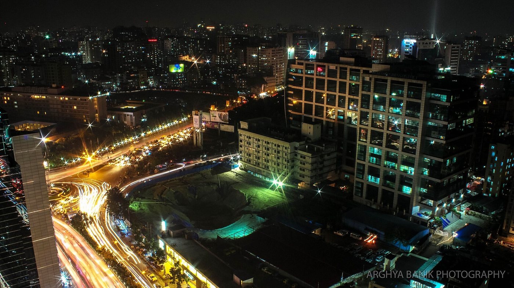

Same load, same wires, same sunset — yet at 7pm electricity costs the most, pollutes the most, and fails the most. Five wounds. One decision loop to close them.

Each one costs real money, real carbon, or real darkness — every single day. Scroll slowly; each one hurts.
6–11pm: gas plants fire up, tariffs spike, feeders trip. The same kilowatt-hour costs the most and pollutes the most — ~670 g CO₂ in Dhaka's mix.
Solar and load forecasts arrive as one confident line with no bands, no provenance, no confidence. Operators learn to ignore them — exactly when clouds matter most.
EVs plug in at 7pm and charge immediately — the worst possible hour — or sit idle all night while cheap, clean power flows past them unused.
Shifting load works — but without metered methodology and an auditable trail, pilots never convert into contracts. Every saving needs a receipt.
When storms knock lines down, islanding, cranking power and hospital-first pickup are improvised — never rehearsed with stability checks. Floods don't wait for paperwork.
The cost of doing nothing, every evening
Same grid. Same sunset. Different decision.
Forecast → uncertainty → optimize → act → explain → measure. See how each role closes them.